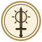

↞ OMEGA

IMLADRIK
La cartographie
La constellation des ARMES : IFULVIN, à venir
La constellation des DRAGONS
MAEDRETHNIR — Dragon de la vérité
VRANESH — Dragon du futur
DRAUKHAIN — Dragon du serment
ADRAMELECH — Dragon de l’imagination
RESHIRAM — Dragon de la réalité
ZEKROM — Dragon de l’idéal
ZOH SHIA — Dragon de la technologie
AMATSU — Dragon de l’air